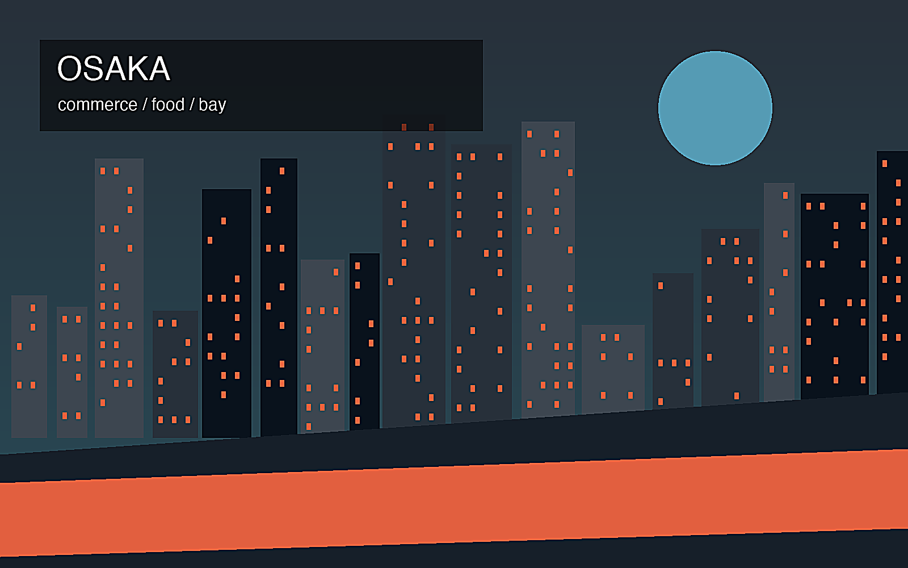
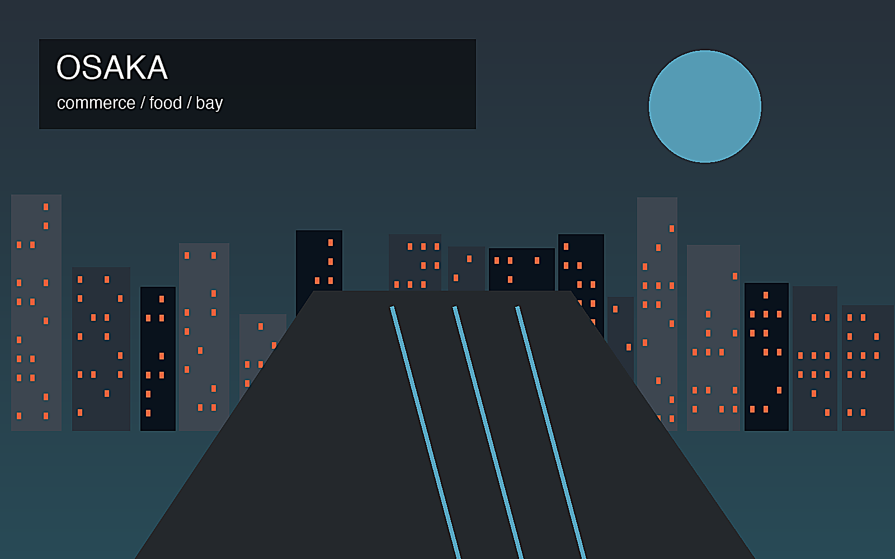

地政学
大阪湾と畿内を背景に、大阪の商業、京都の文化、神戸の港湾が一体の都市圏を作る。

🇯🇵 日本 / アジア / World City Atlas
商都・古都・港都が連なる多核圏。世界都市として、経済規模だけでなく、地理、産業、宗教文化、暮らし、観光を分けて読みます。
都市の骨格
大阪湾と畿内を背景に、大阪の商業、京都の文化、神戸の港湾が一体の都市圏を作る。

大阪湾と畿内を背景に、大阪の商業、京都の文化、神戸の港湾が一体の都市圏を作る。
商業、医薬、化学、食品、機械、港湾物流、観光が強く、中小製造業の分業も厚い。
住吉大社、四天王寺、京都の寺社、神戸の多宗教空間が、地域ごとに異なる信仰景観を作る。
道頓堀、梅田、京都の社寺、神戸港、商店街、食文化が短距離で結ばれる。
Geography
都市の経済力は、地図上の位置、港湾、鉄道、空港、河川、周辺都市との関係から生まれます。
大阪湾と畿内を背景に、大阪の商業、京都の文化、神戸の港湾が一体の都市圏を作る。
大阪を単体の市街地としてではなく、周辺の住宅地、産業地、物流施設、教育機関と接続した都市圏として見ると、GDPの大きさが日々の通勤、土地利用、観光、文化施設の配置にどう表れているかが分かります。
商業、医薬、化学、食品、機械、港湾物流、観光が強く、中小製造業の分業も厚い。
この都市では、華やかな中心業務地区の背後に、清掃、建設、配送、調理、介護、教育、保守、警備といった日常的な労働があります。都市の経済規模を見るときは、数字だけでなく、その数字を支える人と場所を同時に見る必要があります。
Industry
主力産業だけでなく、周辺の小さな仕事が都市を毎日動かしています。
Culture
宗教施設、祭礼、市場、劇場、大学、移民地区は、都市の経済とは別の時間を保存します。
住吉大社、四天王寺、京都の寺社、神戸の多宗教空間が、地域ごとに異なる信仰景観を作る。
道頓堀、梅田、京都の社寺、神戸港、商店街、食文化が短距離で結ばれる。